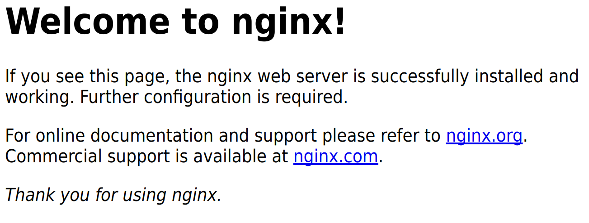
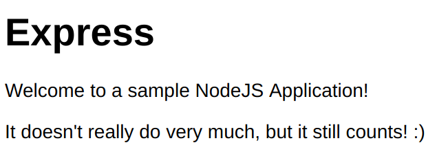

Deploying a NodeJS Application
Kevin Zuern
Queen's University
What We'll Discuss
In this presentation we will go over
- How to configure a web server for nodeJS
- How to configure a domain name with DNS
- How to deploy a nodeJS application to the server
Referenced Material/Useful Links
-
How to Set Up a nodeJS Application for Production on Debian 8
This is the primary guide referenced for this presentation. It covers how to configure NginX and PM2.
-
An Introduction to DNS Terminology: Components and Concepts
This provides some additional info about DNS and Domains.
-
Duck DNS.
DuckDNS is an amazing (and free) dynamic DNS provider. We use them to get a domain name quickly and completely free. These guys are amazing! ♥
-
Digital Ocean
Digital Ocean is a really great cloud computing platform. They provide a server with the hardware you need and a remote shell. That's it. What you install and do with it is up to you. They are a great platform that let's you scale your application to a worldwide level if you wish.
The battle plan
The plan is to:
- Create and configure a server.
- Install any required packages to the server
- Deploy our application
- Set up the app with PM2 to restart automatically if it crashes
- Set up the server to restart PM2 when the server boots
- Set up NginX to reverse proxy all HTTP traffic to the app
- Create and configure a domain name to point to our web server.
1. Set up the Web Server
We'll be using Digital Ocean to host our web application.
Let's go there now and create our droplet.
1.a Create the droplet (container)
On Digital Ocean, LVM containers are called droplets. We'll create one to deploy our application on to.
- Click the "Create Droplet" button
- Select Ubuntu as your operating system
- Select the hardware you need for your application
- Select the data center you want your droplet created in
- Add your SSH keys (if you want)
- Set your hostname (if you want)
- Click Create
1.c Installing Packages
We're gonna need some packages on the server to run our app.
Connect to the server: ssh root@Your.IP.address.here
-
NodeJS & NPM
apt-get install nodejs npm
-
The Web Server
apt-get install nginx
-
Restart the app on crash
npm install -g pm2
2. Configuring a Domain Name
We're going to be using Duck DNS to get a domain name. This will give us domain like http://yourdomainname.duckdns.org.
If you want a higher level domain (like a .com or .me) you'll need to buy one from a domain registrar like Domain.com. Since DuckDNS is free, that's what we're using.
2.a Getting a domain name
- Go to Duck DNS and register an account.
- Type in your unique subdomain name and click "Add domain"
- Update the IP address to the IP of your web server on Digital Ocean.
2.b Configure DNS on Digital Ocean
We need to let Digital Ocean know about the domain name we created to point to our server
- To do this, click on the "Networking" tab on the Digital Ocean console.
- Type in the domain name into the hostname text field and click Add Domain.
-
Create an "A Record" to route traffic to your droplet. See this article for more info
Hostname Will Direct To TTL (Seconds) @ The droplet you created 3600
Test out your webserver!
At this point we should have a running web server. Try pointing your browser to the domain name you registered. You should see a page something like this:
3. Deploy Your Application
We will do the following:
- Use git to download the latest version of the app
- Set up PM2 to manage our application
- Configure NginX to reverse proxy traffic to our app
3.a Fetch the app using Git
We're going to download our app from Github, but first we need to connect to the webserver.
-
ssh root@yourdomain.duckdns.org -
Let's put our app in the web directory of NginX.
cd /var/www git clone https://github.com/Propheis/exampleNodeApp.git cd exampleNodeApp npm install
3.b Set up PM2 to manage our app
PM2 manages your nodeJS application. It will restart the app whenever it crashes and keep track of how long it's been running, etc. See their info page for more info.
-
Start the application in the background
pm2 start bin/www --name "Your Application Name" -
If you get an error saying
/usr/bin/env: ‘node’: No such file or directory:Run this:
ln -s /usr/bin/nodejs /usr/bin/node
and then retry the previous step
3.c Set up PM2 to restart on boot
PM2 will now restart our app whenever it crashes, but if the server is shut down or rebooted it will not run PM2. Let's fix this now by setting up PM2 to start on boot.
pm2 startup systemd
4. Configure NginX
Our app is now running on the server at http://localhost:3000, but this is not accessible from the web. We're going to configure NginX to take all traffic to the server and reverse proxy it to our app. This will let us access the app from the internet. See NginX Docs for more information
4.a Editing the Block Configuration File
We are going to be deleting the default server block and writing our own.
rm /etc/nginx/sites-available/default
touch /etc/nginx/sites-available/default
Insert the following configuration making sure to substitute your domain in to the server_name field. You can use an editor like nano to do this: nano /etc/nginx/sites-available/default
# /etc/nginx/sites-available/default
server {
listen 80;
server_name yourdomainname.duckdns.org;
location / {
proxy_pass http://localhost:3000;
proxy_http_version 1.1;
proxy_set_header Upgrade $http_upgrade;
proxy_set_header Connection 'upgrade';
proxy_set_header Host $host;
proxy_cache_bypass $http_upgrade;
}
}
-
Let's check that we didn't make any mistakes.
nginx -t -
If everything was okay, let's restart NginX.
systemctl restart nginx -
Let's check if our website is up!
Go to
http://yourdomainname.duckdns.org
4.b Check the website
If everything went nicely you should see something like this in your browser:
5. Next Steps
This concludes the main portion of the tutorial. These are some potential next steps you may want to explore:
-
When you have a new version of your app, you can update your production server in two steps:
git pull origin master && pm2 restart yourappID - You can run your app on multiple droplets and have a load balancer distribute the demand across the servers.
- You can easily add encryption to your application by getting an SSL certificate from Let's Encrypt.org
- You can monitor the performance of your application with KeyMetrics.io
- You can automatically scale your application to new droplets as demand on your servers increase. Check out this article for details.
Thanks for Your Time!
I hardly expect anyone to absorb everything that was talked about during this tutorial. There's a lot of material!
That's why I've made the presentation available here.